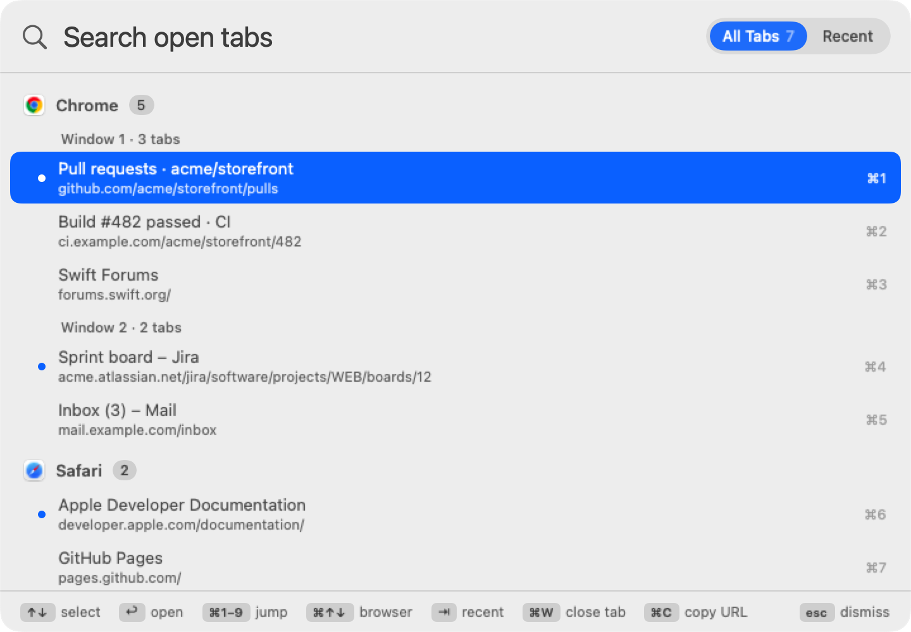
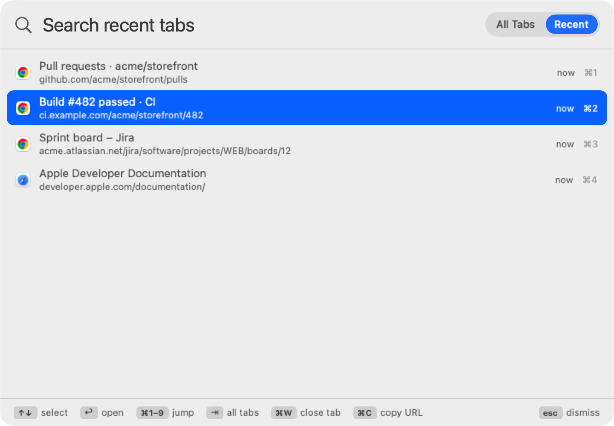
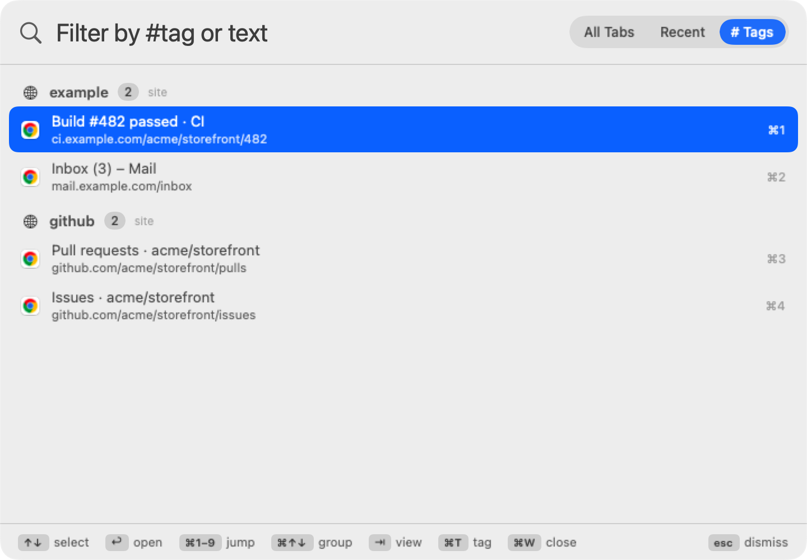
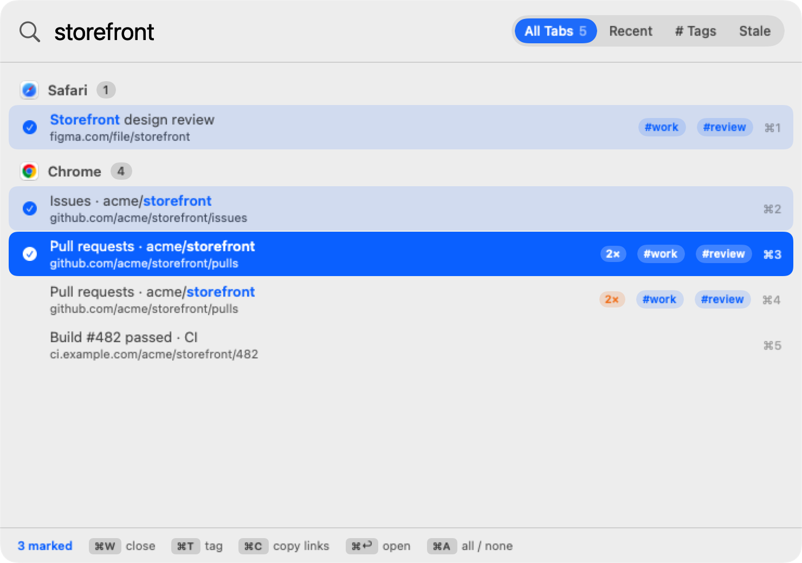
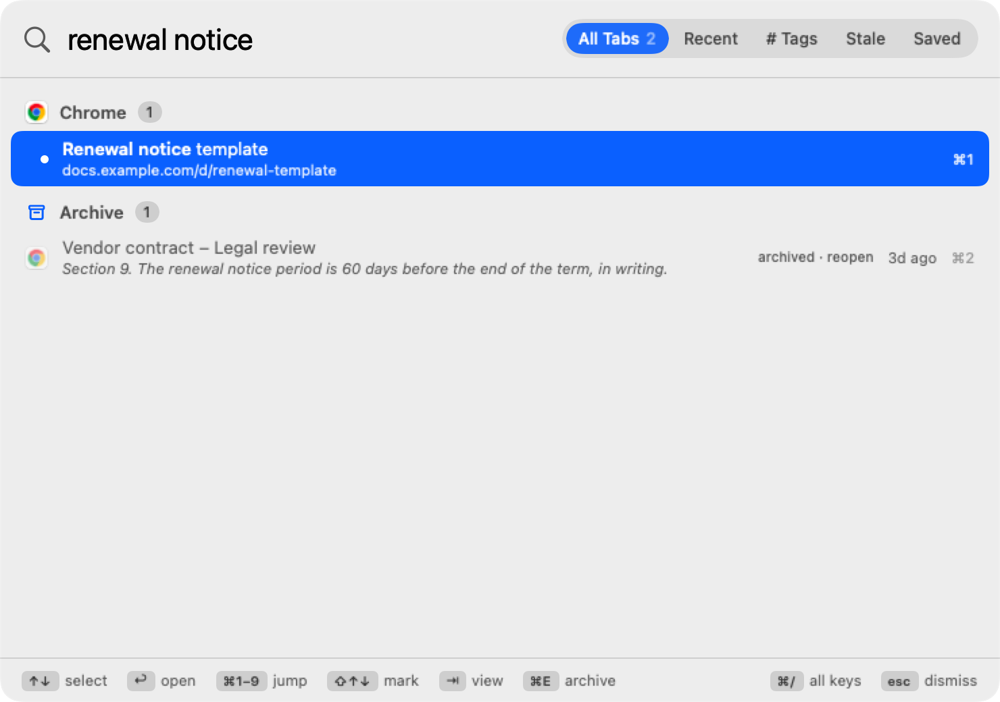
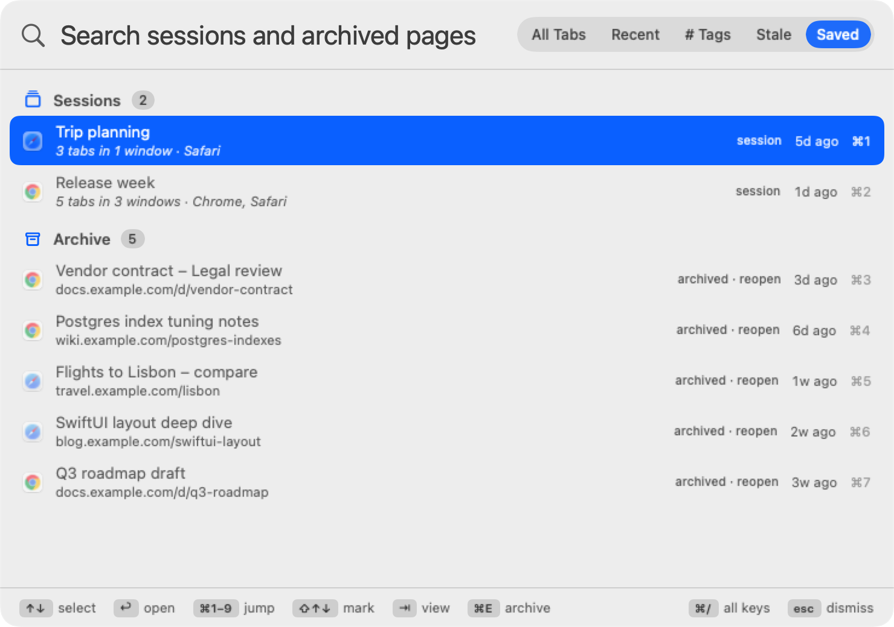
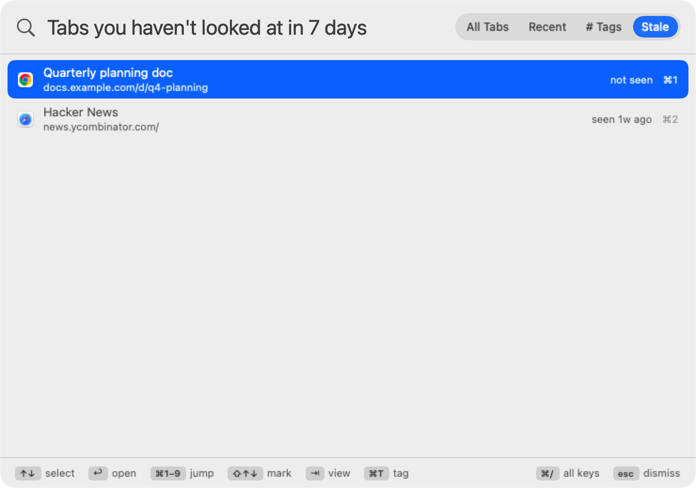

Getting started
- Open BrowserSearch. Settings appears the first time, and a browser-window-with-magnifier icon appears in your menu bar.
- Optional: change the shortcut, and turn on Launch at login.
- Press ⌥Space anywhere. The first time you search while Chrome or Safari is open, macOS asks whether BrowserSearch may control it. Click Allow.
- Type, pick a tab with ↑ ↓, press ↩.
The panel

- Grouped by browser, with each browser's tab count.
- Then by window, when a browser has more than one window open.
- A dot marks the tab each window is currently showing.
- ⌘1–⌘9 labels on the right open those results directly.
- The All Tabs / Recent switch at the top changes views; ⇥ does the same.
- The bar at the bottom lists the keys you can use.
The panel opens on the screen your pointer is on, and closes when you press esc, press the shortcut again, or click anywhere else.
Searching
Each tab is matched against its title, its address (without https:// and www.) and the browser's name.
- Every word must match, in any order.
gh pullfinds “Pull requests · GitHub”. - Initials work:
prfinds “Pull requests”. - Letters can be skipped once you type three or more, as long as they're close together:
gthbfinds GitHub. - Exact text ranks first, and a match near the start beats one near the end. The browser with the best match is listed first.
- Add a browser name to narrow it down:
safari docs. - Matched text is highlighted in bold in each title.
- Nothing open? When no tab matches, ↩ searches the web for what you typed in your default browser.
Recent tabs

The Recent view lists the tabs you used most recently, across all browsers, newest first, with how long ago you used each one.
- It updates by itself. While a browser is in front, BrowserSearch notes which tab you're looking at every couple of seconds. Tabs you pick in the panel are added immediately.
- Jump back. If you open the panel from a browser, the tab you're on is first, so the previous tab is preselected. Shortcut, ↩, and you're back.
- Closed tabs show closed · reopen. Picking one opens its address again in the same browser.
- The last 50 tabs are kept. Searching works here too.
Hashtags & saved groups
Group tabs your way with hashtags, and let BrowserSearch group them by site for you. A hashtag is also a saved tab group: it remembers its pages after you close them.

- Tag a tab: select it and press ⌘T. Type tags like
#work #jira(the#is optional), then ↩. esc cancels; clear the box to remove tags. - Tags follow the page, not the browser: the same address open in Chrome and Safari shares its tags, and they come back when you reopen it.
- Search by tag in any view:
#woshows tabs with a tag starting “wo”. Mix with text:#work jira. - The # Tags view (⇥ until it's selected) lists your tags, most used first, each with its tabs. ⌘↑ ⌘↓ jump between tags.
- Site groups appear below your tags automatically for any site with two or more open tabs (
github,atlassian…), marked “site”. - Click a tag chip on a result to show everything with that tag.
- Reopen a whole group: in the # Tags view, select any tab in a group and press ⌘↩. Pages you closed show as closed · reopen and come back in the browser they were in; tabs that are still open aren't duplicated.
- Tag many tabs at once: mark them (see Bulk actions) and press ⌘T; the tags you type are added to each.
Firefox tabs have no address available, so they're tagged by title and can't be reopened once closed.
Bulk actions

Mark tabs, then act on all of them with one key.
- Mark: ⇧↑ / ⇧↓ marks as you move, ⌘-click marks one, ⌘A marks everything listed (again to clear). Search first to narrow what ⌘A takes.
- Then: ⌘W closes them, ⌘T tags them, ⌘P pins them, ⌘M moves them to the front window, ⌘O opens them in another browser, ⌘↩ opens them all.
- Copy as Markdown: ⌘C with several tabs marked copies a list of links, ready to paste into notes or a chat:
- [Title](https://…). With one tab it copies just its address.
Pins & keywords
- Pin with ⌘P: pinned tabs sit in a Pinned section at the top of All Tabs, so ⌘1 is always your most important tab. ⌘P again unpins.
- Keyword with ⌘K: give a tab a short word such as
jira. Typing exactly that word shows it first under Keyword, so shortcut,jira, ↩ always lands there, and reopens it if the tab was closed. A keyword belongs to one page; giving it to another page moves it. Clear the box to remove it.
Tab archive

- ⌘E archives the selected or marked tabs: BrowserSearch keeps the title, address, hashtags and the visible text of the page, then closes the tab. Firefox tabs are archived but stay open, since Firefox can't be asked to close them.
- Archived pages show up under Archive whenever you search in All Tabs, matched by title, address,
#tagor any words in the page text, with a snippet of where the words were found. ↩ reopens the page in the browser it came from and takes it out of the archive. - The Saved view (⇥) lists everything archived, newest first. ⌘W deletes entries.
- Page text needs Allow JavaScript from Apple Events in Chrome, Brave, Edge or Vivaldi (View › Developer) or Safari (Develop menu); without it the page is archived without its text. Turn off Keep page text in Settings › Archive to never store it.
- Archive stale tabs automatically (Settings › Archive, off by default): every half hour, tabs that would be listed in the Stale view are archived and closed. Tabs that are showing in their window, pinned, or given a keyword are never touched.
- The archive keeps the latest 2,000 pages and up to 20,000 characters of text from each.
Saved sessions

- ⌘S saves the marked tabs, or every tab when none are marked, as a named session. Each browser window is kept separately, tabs in order.
- In the Saved view, pick a session and press ↩: each window is opened again in its browser, with all its tabs. The session stays saved, so you can restore it again later; ⌘W deletes it.
- Firefox tabs can't be read with their addresses, so sessions don't include them.
Duplicates & stale tabs

- Duplicates: a page open more than once (in any browser, ignoring
https,www.and#sectiondifferences) gets a 2× badge. ⌘D closes the extra copies among the tabs listed, keeping the one showing in its window. Search first to limit it, for example to one site. - Stale view (⇥ to Stale): open tabs you haven't looked at for 7 days, oldest first, with when you last saw each. Mark them all with ⌘A, then archive with ⌘E or close with ⌘W. Change the number of days in Settings › Organize.
- “Looked at” means the tab was in front in its browser while BrowserSearch was running. Tabs never seen only count as stale once BrowserSearch has been running for that many days, so nothing shows up right after installing.
Moving tabs
- ⌘M brings the selected (or marked) tabs into the browser's front window, the one you're working in.
- ⌘O opens them in another browser instead: pick it with a number key or a click. The page opens there and the original tab closes.
Safari moves tabs as they are. Chrome, Brave, Edge and Vivaldi can't move a tab between windows from outside, so BrowserSearch reopens the page in the front window and closes the original; that tab's back history doesn't come along. Firefox tabs can't be moved from the panel.
Searching page text
Press ⌘F in the panel to also match the text inside pages: results that matched only in the page show a short snippet of where. Press it again to turn it off.
If your search shortcut is ⌘F, pressing it in the panel closes the panel instead; Settings warns about this. Pick another shortcut to use page search.
Previous-tab shortcut
⌃⌥⇥ (change or turn off in Settings › General) jumps straight back to the tab you used before the current one, without opening the panel. Press it again to come back, like ⌘⇥ for apps but for browser tabs, across browsers. From another app, it returns to the last tab you used.
Shortcuts & Siri
BrowserSearch adds three actions to the Shortcuts app (and to Siri and Spotlight):
- Find Tab: switches to the best match for some text; keywords and
#tagswork too. - Open Tab Group: opens every page with a hashtag, reopening closed ones. Good for a “Start work” shortcut.
- Go to Previous Tab.
Keyboard
| Key | Action |
|---|---|
| ⌥Space (default) | Open or close the panel |
| ↑ / ↓ | Move the selection (wraps around) |
| ⇞ / ⇟ | Move eight rows at a time |
| ⌘↑ / ⌘↓ | Jump to the previous / next group (browser, section or tag) |
| ↩ | Switch to the selected tab |
| ⌘1–⌘9 | Switch to result 1–9 |
| ⇥ | Cycle All Tabs, Recent, # Tags, Stale and Saved |
| ⇧↑ / ⇧↓, ⌘-click | Mark tabs for a bulk action |
| ⌘A | Mark every tab listed / clear marks |
| ⌘↩ | Open the marked tabs, or in # Tags the whole group (reopening closed pages) |
| ⌘T | Hashtags for the selected or marked tabs |
| ⌘K | Keyword for the selected tab |
| ⌘P | Pin / unpin |
| ⌘W | Close the selected or marked tabs (not Firefox); in Saved, delete them |
| ⌘E | Archive the selected or marked tabs (and close them) |
| ⌘S | Save the marked tabs, or all tabs, as a session |
| ⌘D | Close duplicate tabs among those listed |
| ⌘M | Move to the browser's front window |
| ⌘O | Open in another browser (then a number to pick it) |
| ⌘C | Copy the address, or Markdown links for marked tabs (plain text copy if you've selected text in the search box) |
| ⌘F | Also search the text inside pages |
| ⌘R | Reload the tab list |
| ⌘/ | Show every key |
| ⌃⌥⇥ (anywhere) | Jump to the previous tab |
| esc | Close the panel and return to what you were doing |
You can also click any result.
Supported browsers
| Browser | Searches | Close tab | Recent |
|---|---|---|---|
| Google Chrome | Title and address | Yes | Yes |
| Safari | Title and address | Yes | Yes |
| Brave, Microsoft Edge, Vivaldi | Title and address | Yes | Yes |
| Firefox | Title only | No | Yes, but closed Firefox tabs can't be reopened |
Browsers that aren't running are skipped. BrowserSearch never opens a browser just to search it.
Permissions
Automation (Chrome, Safari). Lets BrowserSearch read tab titles and addresses, switch and close tabs. macOS asks once per browser, the first time you search, or right away if you click Allow… in Settings › Browsers. Review it in System Settings › Privacy & Security › Automation.
Accessibility (Firefox only). Firefox has no scripting support for tabs, so BrowserSearch reads Firefox's tab bar the way assistive tools do, and clicks the tab you pick. Click Grant… in Settings › Browsers, then turn on BrowserSearch in System Settings › Privacy & Security › Accessibility.
Settings
Open from the menu bar icon › Settings…, or open BrowserSearch again from Finder or Spotlight.
General
- Search shortcut. Click it and press a new combination. esc cancels. BrowserSearch checks it against macOS shortcuts, other apps' global hotkeys, your custom App Shortcuts and Services, and the default shortcuts of launchers you have installed (ChatGPT, Raycast, Alfred). A combination that wouldn't reach BrowserSearch asks before it's used; softer clashes, like ⌘F which every app uses for Find (and the panel uses for page search), are shown as warnings under the shortcut.
- Previous tab shortcut. ⌃⌥⇥ by default; record another, or turn it off with the ✕. See Previous-tab shortcut.
- Launch at login. Starts BrowserSearch quietly in the menu bar when you log in. If macOS asks for approval, click Open Login Items.
- Show in menu bar. Turn off for a clean menu bar. The shortcut keeps working; open BrowserSearch from Finder or Spotlight to get back to Settings.
Search
- Match web addresses. On by default. Turn off to search tab titles only.
- Show web addresses in results. Hide the address line for a more compact list.
- Remember recently used tabs. Turns the Recent view on or off.
- Open the panel on Recent. Start in Recent instead of All Tabs.
- Clear Recent Tabs. Forgets the list.
Organize
- Hashtags › Clear All Tags. Removes every tag you've added.
- Keywords & Pins › Clear Keywords & Pins.
- Stale after N days. How long a tab can go without a look before the Stale view lists it (1–60, default 7).
Archive
- Keep page text. On by default. Off stores only titles, addresses and tags.
- Archive stale tabs automatically. Off by default. See Tab archive.
- Clear Archive and Clear Sessions delete them.
Browsers
- On/off per browser. Leave out a browser you don't want searched or tracked.
- Permission status for each browser, with Allow… (Chrome, Safari) or Grant… (Firefox).
- Open Privacy & Security Settings to review or revoke access.
About
Version, and links to these docs, support and the issue tracker.